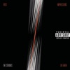

Reptilia
" For an indie song, this definitely has one of the greatest
guitar riffs. I'd even put it up there with Seven Nation Army and
Smoke on the Water."
"Best band. Best song. In all seriousness, the only problem with
it is the fact that it doesn't go for 6 minutes. Few songs have
this level of genius in them."
"Great song, incredible riff. Makes me want to jump and scream.
One of the best bands in the world"

Hard to Explain
"By far the greatest song EVER made by the band, absolutely a
masterpiece. With its hip the song to a maximal climax. Absolutely
one of the best songs of the 21st century."
"It's very hard to compare all of their songs, it's a fact. I'm
very torned between all of their hits but I've got to say, this
song nging, this song just explodes itself with probability to
become even better. THE STROKES 4 LYF!"
"I love this song. It has to be by far the best Strokes song. It
really gives off there mellow sounding tone to the song. From the
guitar in the beginning to Julian's voice, it fits in just about
every part of The Strokes."

You Only Live Once
"Not only is ths song umbeat and addicting, the lyrics are
meaningful and deep! Hearing this song for the first time a long
time ago, I wasn't expecting this. You Live Only Once has awesome
guitar riffs and speaks the truth. The Strokes, keep up the good
work!"
"It's very hard to compare all of their songs, it's a fact. I'm
very torned between all of their hits but I've got to say, this
song is very beautiful. The intro to this song is unimaginable and
unpredictable. When Julian starts singing, this song just explodes
itself with probability to become even better. THE STROKES 4 LYF!"
"I love this song. It has to be by far the best Strokes song. It
really gives off there mellow sounding tone to the song. From the
guitar in the beginning to Julian's voice, it fits in just about
every part of The Strokes."
Automatic Stop
"Not only is ths song umbeat and addicting, the lyrics are
meaningful and deep! Hearing this song for the first time a long
time ago, I wasn't guitar riffs and speaks the truth. The Strokes,
keep up the good work!"
"It's very hard to compare all of their songs, it's a fact. I'm
very torned between all of obability to become even better. THE
STROKES 4 LYF!"
"I love this song. It has to be by far the best Strokes song. It
really gives off there mellow sounding tone to th the beginning to
Julian's voice, it fits in just about every part of The Strokes."
Last Nite
"Not only is ths song umbeat and addicting, the lyrics are t time
a long time ago, I wasn't expecting this. You Live Only Once has
awesome guitar riffs and speaks the truth. The Strokes, keep up
the good work!"
"It's very hard to compare all of their songs, it's a fact. I'm
very torned between all of their hits but I've got to say, this
song is very beautiful. The intro to this song is unimaginable and
unpredictable. When Julian starts singing, this song just explodes
itself with probability to become even better. THE STROKES 4 LYF!"
"I love this song. It has to be by far the best Strokes song. It
really gives off there mellow sounding tone to the song. From the
guitar in the beginning to Julian's voice, it fits in just about
every part of The Strokes."